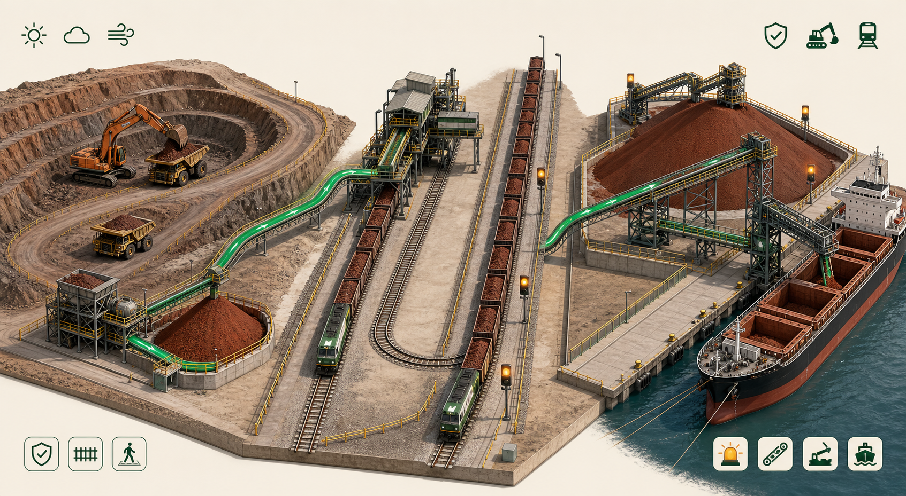
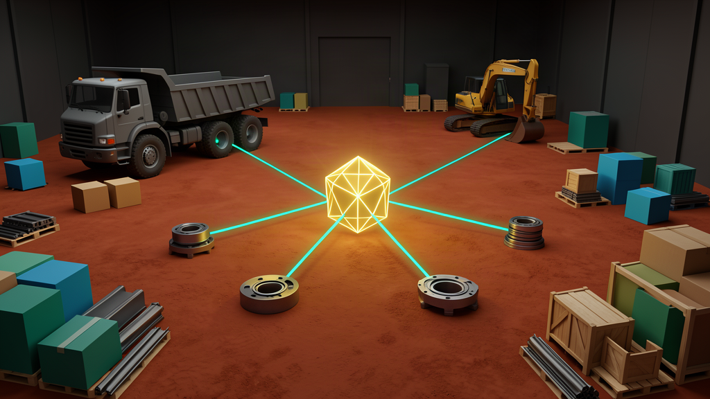
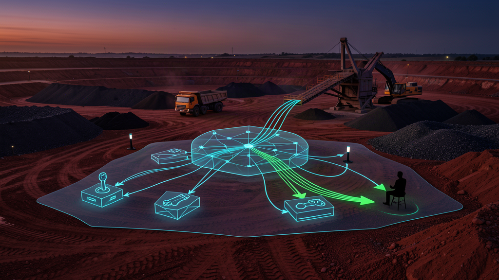

Master Data
Make critical materials, assets and records reliable enough for operational decisions.

A multinational iron-ore producer engaged 01.AI across transformation strategy, data foundations, scheduling decisions and a generative intelligence layer for complex mining operations.
Mine production, stockyards, rail capacity, port operations and vessel windows form one coupled system. A local improvement can move the bottleneck rather than improve total throughput.
01.AI therefore treated the engagement as three connected layers—not three isolated AI projects.
Make critical materials, assets and records reliable enough for operational decisions.
Generate comparable, executable schedules across changing constraints.
Connect sensing, prediction, tools, human judgment and execution feedback.

TRUSTED OPERATING STATEPoor descriptions, missing attributes and stale lifecycle states propagate into duplicate codes, incorrect purchasing, excess inventory and avoidable write-offs.
Profile records and surface quality patterns.
Find duplicates, similarities and cross-source relationships.
Recommend normalized values; route exceptions to people.
Keep trusted records accurate through controls and feedback.
The value is not cleaner data in isolation. It is fewer wrong purchases, fewer duplicates and a more reliable base for planning.
Port congestion, equipment state, labour, weather, tides and customer demand continuously reshape the feasible plan. Fixed rules and periodic replanning cannot absorb all constraints at once.
Production plans, orders, inventory, rail capacity, routes, port state, equipment, vessel windows, cost, weather and tides.

Balance truck–excavator allocation, routes and dump-point assignment to reduce queues and non-productive time.
Keep the daily plan aligned with field reality, grade targets and blending rules as conditions change.
Anticipate equipment, road, weather and delay risks early enough for intervention.
Map the workflow and data, establish KPI baselines and select a decision loop.
Introduce alerts and recommendations alongside the current operating process; validate human–AI interaction and decision quality.
Connect approved recommendations to execution and continuously replan.
Reuse proven objects, workflows, evaluation and controls across sites and shifts.
Success measures are baselined with the operator before deployment and tracked through agreed acceptance evidence.